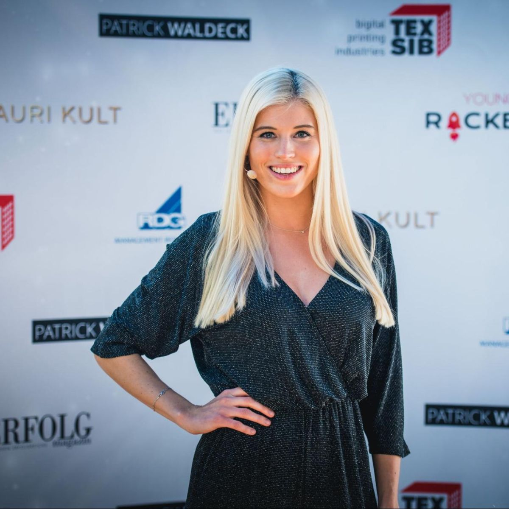
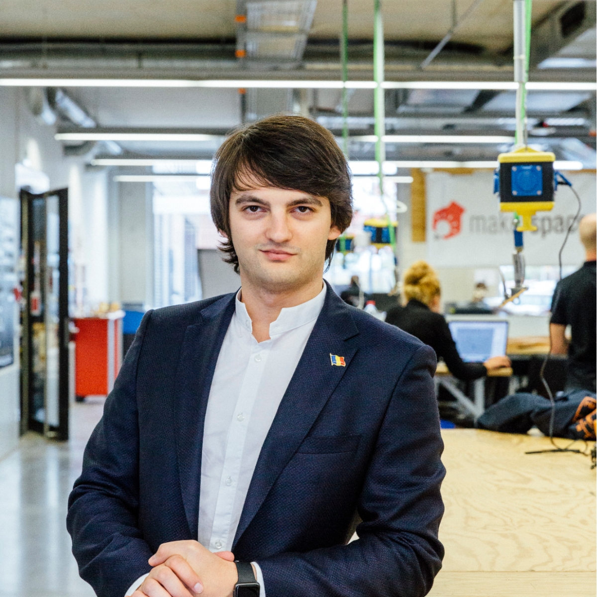
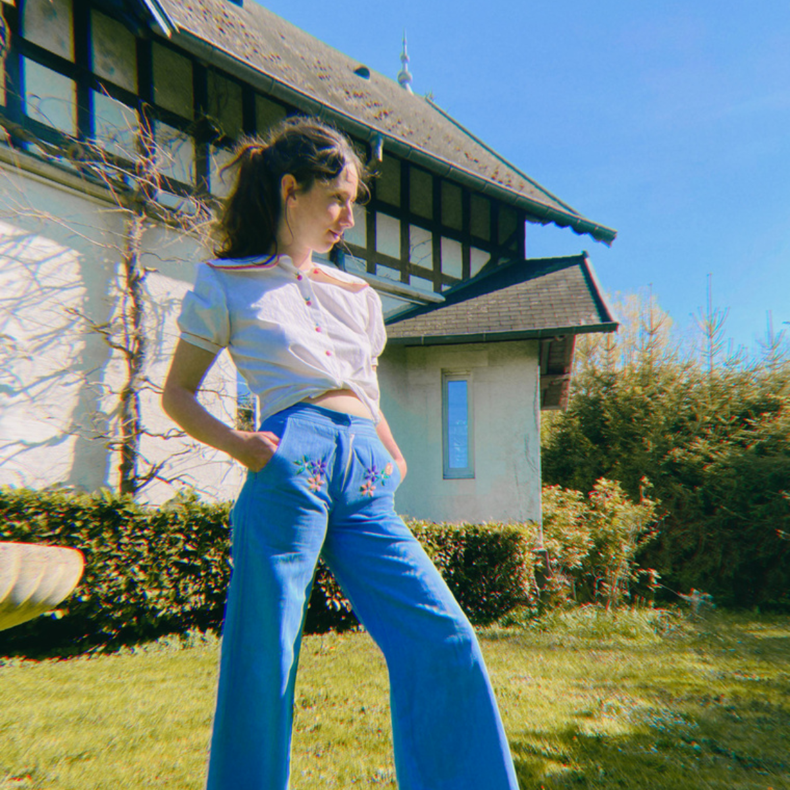

Speakers

Celine Flores Willers
Linkedin Top Voice
Lara Obst
Co-Founder of THE CLIMATE CHOICE
Dr. Christian Zenger
CEO at PHYSEC | MIT Innovator Under 35


Cornel Amariei
CEO at .lumen, Forbes U30 EU, Global
Business Hall of Fame Laureate, JCI's Ten Outstanding Young Persons of the World
Clare Rudo
Startup Founder, Speaker & Writer
Passionate about Women empowerment, Youth development, Africa, Culture and Business
Tanja Annabelle Deisler
Account Executive at Salesforce,
Ex-Amazon, Ex-Accenture

Alexandra Sophie
Fashion photographer based in Paris
(Harper's Bazaar UK, Vogue China, Vogue Japan, Numero Russia..)
Prof. Dr. Klaudia Brix
Professor of Cell
Biology
COST-Action CA20113 ProteoCure, EU, Member of the Management Committee for Germany
COST-Action CA20113 ProteoCure, EU, Member of the Management Committee for Germany
Dr. Niko Gärtner
Historian and history teacher
A graduate of the UCL Doctoral School in London
A graduate of the UCL Doctoral School in London